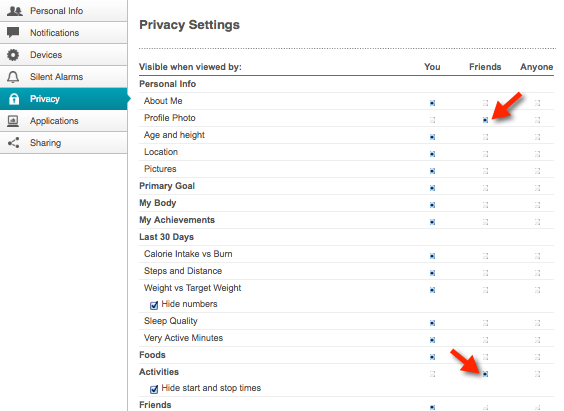

- To participate in the fitness challenge you must have a FitBit device and account. Please see the "FitBit Settings" tab above to ensure your privacy settings will allow us to access your account information in order to track your steps during the contest. Visit the FitBit website to learn more about FitBit devices and setting up your account.
- Send a FitBit Friend request to fitbitcontest@gmail.com.
- Follow the most active participants on Twitter @fitbitcontest. Please see the "Leaderboard on Twitter" tab above for additional information.
- Follow the most active participants via text messaging. Please see the "Leaderboard via SMS" tab above for additional information.
- The last thing to do is get out and get physical. We hope to see your name on top of the leaderboard!
Once you have added "fitbitcontest" as a friend (via email to fitbitcontest@gmail.com) you'll need to adjust/verify your privacy settings. Navigate to Settings/Privacy and set Activities to "Friends" or "Anyone". Optionally, to have your Avatar picture displayed on the leaderboard, set Profile Photo to "Friends" or "Anyone".

This JazzHub/BlueMix created application subscribes to the Twitter API. Every time there is a leaderboard change a tweet will be sent out with the new leaders. You will only get 140 characters of leaders of course. Just go to your twitter account and follow us
@fitbitcontest and enjoy the activity over the week.
Our Jazzhub/BlueMix created application leverages the Twilio SMS API. If you text your name (or nickname) to XXX-XXX-XXXX you will recieve an SMS messages every time there is a leaderboard change. Simply text "no" to XXX-XXX-XXXX and you will stop recieving SMS updates.